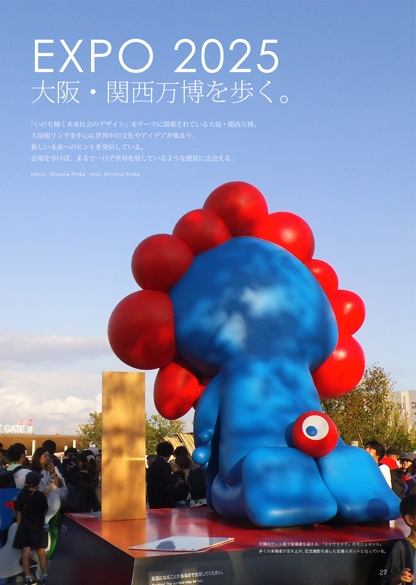
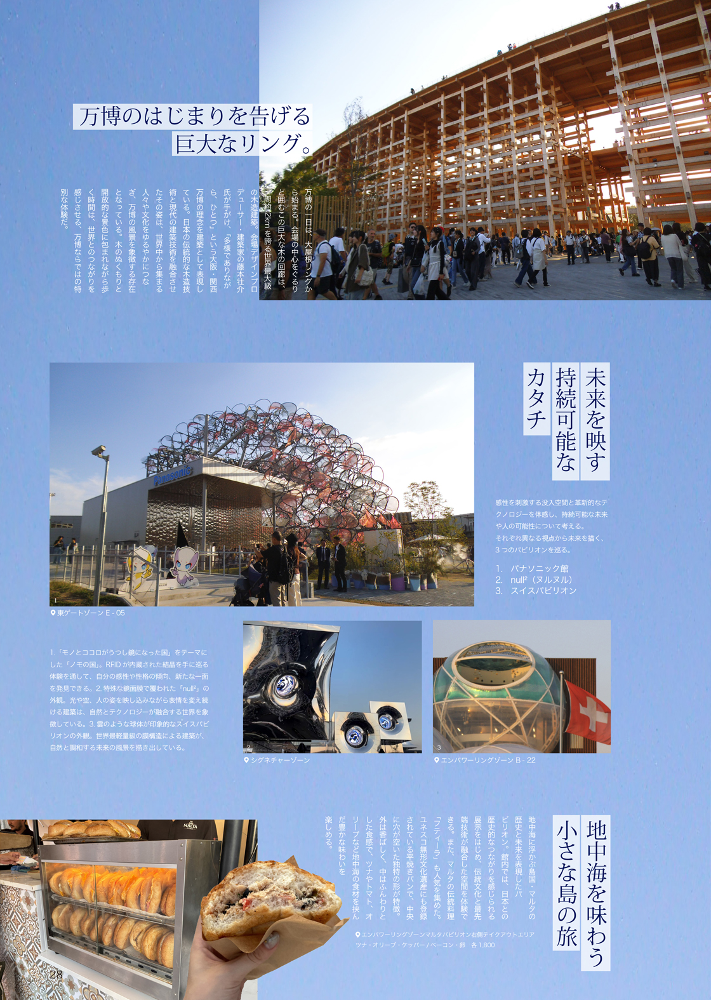
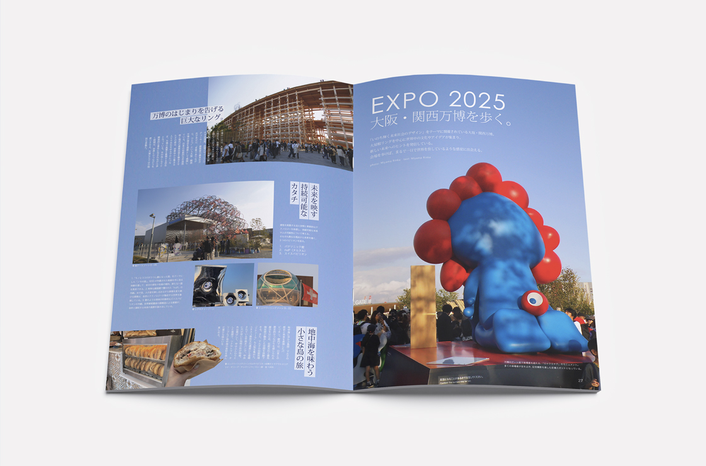

大阪・関西万博を歩く
Editorial Design / Magazine
Adobe Photoshop / Adobe InDesign
大阪・関西万博の魅力を、世界を旅するような視点で紹介する特集ページ。各国パビリオンの建築や文化、食を通して、会場を歩く発見や非日常の空気感が伝わる誌面。変化と統一感の両立を意識した誌面構成。見出しを際立たせる帯デザインや、万博を巡るような視線誘導を取り入れ、自然に情報を追えるレイアウトにした。空の色を活かしたカラー設計をベースに、写真のサイズや配置にメリハリをつけ、誌面にリズムと奥行きを生み出した。情報量の多い内容も読みやすくなるよう要素を整理し、視認性とデザイン性の両立を図った。